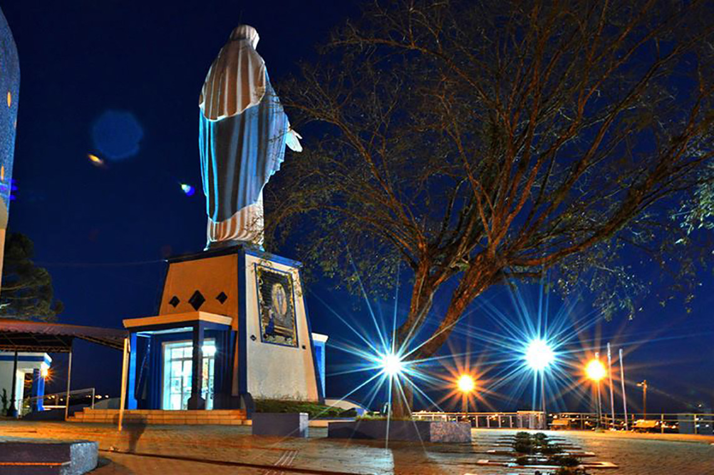

Apresentação da página
Está página foi criada com o intuito de mostrar um pouco a história de Irati Paraná e mostrar também como o principal ponto turístico o Morro da Santa foi construído.
Está página foi criada com o intuito de mostrar um pouco a história de Irati Paraná e mostrar também como o principal ponto turístico o Morro da Santa foi construído.